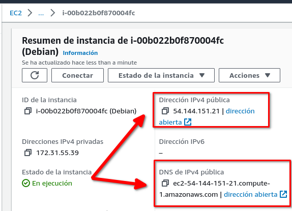
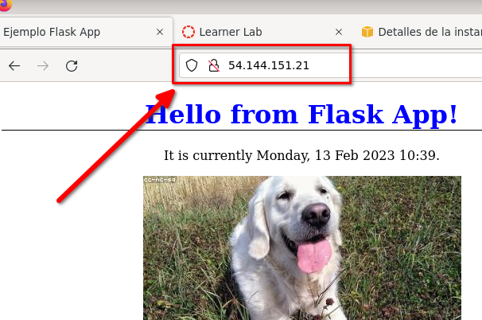

Deploy aplicación dockerizada¶
1. Introducción¶
Práctica similar a las anteriores, el cambio es que la imagen utilizada es una imagen creada por el usuario.
2. Probar la aplicación sin dockerizar¶
Se le proporciona una aplicación Python que usa el framework Flask. No es propósito de la práctica avanzar en el uso de ese framework.
Puede descargae el fichero galeria.zip
En el directorio de la aplicación tiene disponible:
~/galeria$ tree .
.
├── Dockerfile
├── README.md
├── requirements.txt
└── src
├── app.py
├── static
│ └── estilos.css
└── templates
└── index.html
3 directories, 6 files
~/galeria$
Para probar la aplicación en local (y sin dockerizar) se crea un entorno virtual con venv, y se instalan las dependencias (flask y gunicorn) usando el fichero requirements.txt.
~/galeria$ python -m venv venv
~/galeria$ source venv/bin/activate
...
(venv) ~/galeria$ pip install -r requirements.txt
....
(venv) ~/galeria$
Una vez creado el entorno e instaladas las dependencias se lanza la aplicación con el comando python src/app.py:
(venv) ~/galeria$ python src/app.py
* Serving Flask app 'app'
* Debug mode: on
WARNING: This is a development server. Do not use it in a production deployment. Use a production WSGI server instead.
* Running on http://127.0.0.1:5000
Press CTRL+C to quit
* Restarting with stat
* Debugger is active!
* Debugger PIN: 944-294-141
127.0.0.1 - - [13/Feb/2023 10:30:32] "GET / HTTP/1.1" 200 -
127.0.0.1 - - [13/Feb/2023 10:30:32] "GET /static/estilos.css HTTP/1.1" 304 -
...
Acceda a la URL http://127.0.0.1:5000 para comprobar que la aplicación funciona. Detenga la aplicación pulsandoCtrl+C.
2.1. Prueba con servidor de aplicaciones¶
En un entorno de producción se usaría un servidor de aplicaciones. En este caso se usa gunicorn y la forma de invocarlo sería:
(venv) ~/galeria$ gunicorn --chdir src app:app --bind 0.0.0.0:5000 --reload --access-logfile -
[2023-02-13 10:32:50 +0100] [3863] [INFO] Starting gunicorn 20.1.0
[2023-02-13 10:32:50 +0100] [3863] [INFO] Listening at: http://0.0.0.0:5000 (3863)
[2023-02-13 10:32:50 +0100] [3863] [INFO] Using worker: sync
[2023-02-13 10:32:50 +0100] [3864] [INFO] Booting worker with pid: 3864
...
--reload --access-logfile - se usan en desarrollo.
3. Generar una imagen Docker con la aplicación¶
Si todos los pasos anteriores son correctos está preparado para crear la imagen docker. El fichero Dockerfile a usar será similar a este:
# start by pulling the python image
FROM python:3-slim
# switch working directory
WORKDIR /app
# copy the requirements file into the image
COPY ./requirements.txt ./
# install the dependencies and packages in the requirements file
RUN pip install -r requirements.txt
# copy every content from the local file to the image
COPY src .
# configure the container to run in an executed manner
CMD gunicorn --bind 0.0.0.0:5000 app:app
Se construye la imagen con docker build
(venv) ~/galeria$ docker build -t galeriaflask:latest .
[+] Building 0.5s (10/10)
=> [1/5] FROM docker.io/
...
=> => writing image sha256:eddfcc73aa07559ad45ac3ee6bfbe8e1d85cf3775a445aa64691cc300abdb7bb 0.0s
=> => naming to docker.io/library/galeriaflask:latest 0.0s
(venv) ~/galeria$ docker image ls
REPOSITORY TAG IMAGE ID CREATED SIZE
galeriaflask latest eddfcc73aa07 3 minutes ago 145MB
hello-world latest feb5d9fea6a5 16 months ago 13.3kB
(venv) ~/galeria$
Y se prueba la imagen en su equipo:
(venv) ~/galeria$ docker run -it -p 5000:5000 galeriaflask
[2023-02-13 10:06:47 +0000] [8] [INFO] Starting gunicorn 20.1.0
[2023-02-13 10:06:47 +0000] [8] [INFO] Listening at: http://0.0.0.0:5000 (8)
[2023-02-13 10:06:47 +0000] [8] [INFO] Using worker: sync
[2023-02-13 10:06:47 +0000] [9] [INFO] Booting worker with pid: 9
...
4. Subir la imagen a Dockerhub¶
En prácticas previas se mostró como subir una imagen a Dockerhub. En primer lugar necesita renombrarla con su usuario en Dockerhub, y hacer push de la imagen (puede ser que necesite hacer docker login antes).
Primero se renombra la imagen galeria:
(venv) ~/galeria$ docker tag galeriaflask:latest angoies/galeriaflask:latest
(venv) ~/galeria$ docker image ls
REPOSITORY TAG IMAGE ID CREATED SIZE
angoies/galeriaflask latest eddfc7 10 minutes ago 145MB
galeriaflask latest eddfc 10 minutes ago 145MB
(venv) ~/galeria$
(venv) ~/galeria$ docker push angoies/galeriaflask:latest
The push refers to repository [docker.io/angoies/galeriaflask]
8c1abd2be38e: Pushed
9fdb2af238fa: Pushed
36e5ac463d7d: Mounted from library/python
4695cdfb426a: Mounted from library/python
latest: digest: sha256:5cab61ff56ef823575025ffc0efcb8 size: 2203
(venv) ~/galeria$
Si quiere comprobar que la imagen se ha subido correctamente puede comprobarlo en la web de dockerhub p puede borrar la imagen almacenada en local con docker rmi y volver a lanzar la imagen con docker run --pull always ...
5. Desplegar en EC2¶
Si tiene creada la instancia EC2 y Docker instalado en ella basta lanzar el contenedor desde la conexión SSH.
-
Conectar a EC2:
2. Descargar la imagen:~/aws$ ssh -i "vockey.pem" admin@ec2-54-144-151-21.compute-1.amazonaws.com ... Debian GNU/Linux ... permitted by applicable law. Last login: Sun Feb 12 20:02:42 2023 from 81.40.160.27 admin@ip-172-31-55-39:~$ docker --version Docker version 23.0.1, build a5ee5b1 admin@ip-172-31-55-39:~$3. Lanzar la imagen. Observe la redirección de puertosadmin@ip-172-31-55-39:~$ docker pull angoies/galeriaflask Using default tag: latest ... docker.io/angoies/galeriaflask:latest admin@ip-172-31-55-39:~$-p 80:5000ya que la aplicación espera conexiones en el puerto 5000 y la instancia EC2 está configurada para aceptar peticiones en el puerto 80:4. Probar que la aplicación es accesible.Compruebe la IPadmin@ip-172-31-55-39:~$ docker run -it -p 80:5000 angoies/galeriaflask [2023-02-13] [7] [INFO] Starting gunicorn 20.1.0 [2023-02-13] [7] [INFO] Listening at: http://0.0.0.0:5000 (7) [2023-02-13] [7] [INFO] Using worker: sync [2023-02-13] [8] [INFO] Booting worker with pid: 8
Y acceda a la misma:

-
No olvide terminar la instancia EC2 y salir ordenadamente de la consola AWS y del Learner Lab.